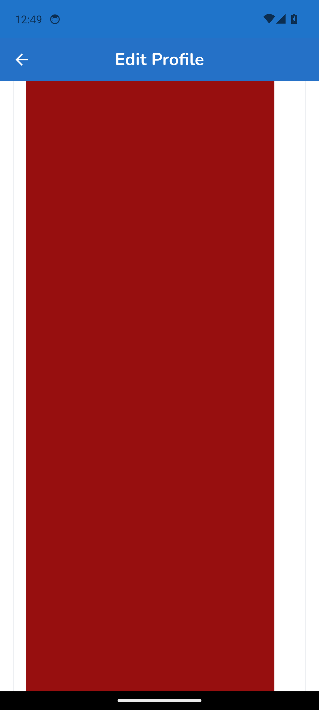
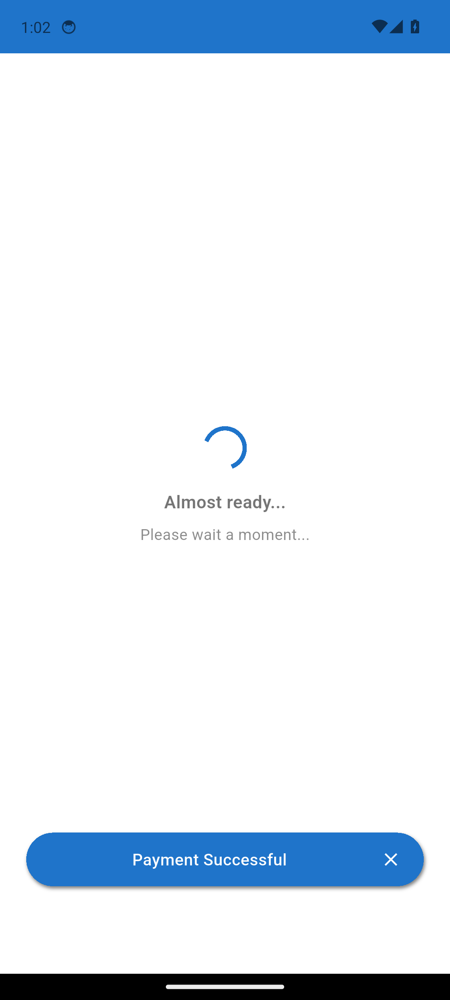
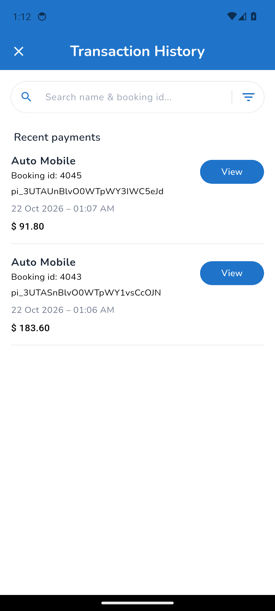
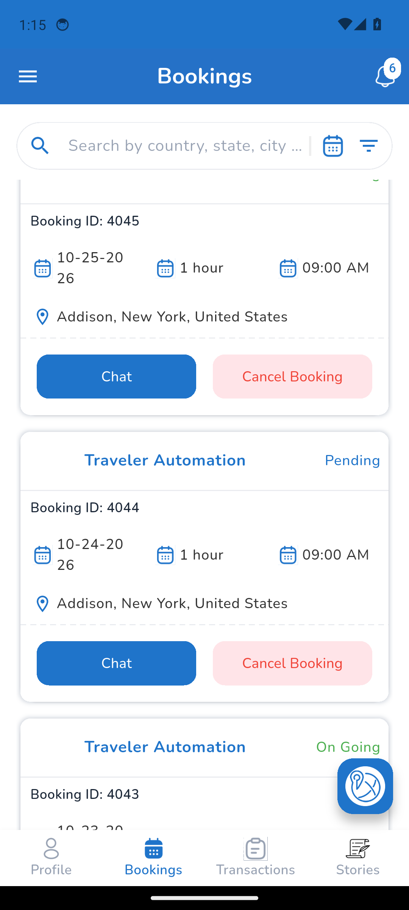
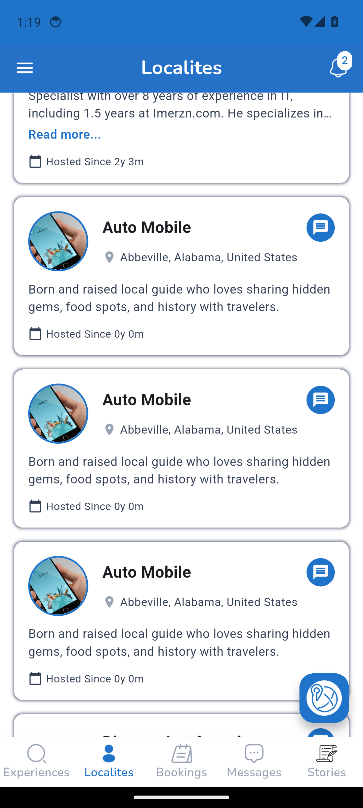

Mobile test report
Spec Files: 14 passed, 7 retries, 5 failed, 19 total (100% completed) in 00:44:41
Full test log · Passwords are masked. Element trees and the Appium log are in the run's mobile-test-results artifact.
1. mobile PRF-002 | Localite edits name, bio, and hosted experiences
tests/localite/mobile-edit-profile.spec.ts
Error: Step "Edit name, bio, and experiences" failed: The Bio field is not shown on Edit Profile. If the screenshot shows a red box under "Pronouns(optional)", the app's Pronouns dropdown crashed (dropdown_button2: "There should be exactly one item with [DropdownButton]'s value") and hides the rest of the form. element ("//android.widget.EditText[@text="Born and raised local guide who loves sharing hidden gems, food spots, and history with travelers."]") still not displayed after 5000ms
at step (/home/runner/work/Imerzn-MobileTest/Imerzn-MobileTest/helpers/mobile-step.ts:11:11)
at async Context.<anonymous> (/home/runner/work/Imerzn-MobileTest/Imerzn-MobileTest/tests/localite/mobile-edit-profile.spec.ts:31:5)

2. mobile PRF-002 | Localite edits name, bio, and hosted experiences
tests/localite/mobile-edit-profile.spec.ts
Error: Step "Edit name, bio, and experiences" failed: The Bio field is not shown on Edit Profile. If the screenshot shows a red box under "Pronouns(optional)", the app's Pronouns dropdown crashed (dropdown_button2: "There should be exactly one item with [DropdownButton]'s value") and hides the rest of the form. element ("//android.widget.EditText[@text="Born and raised local guide who loves sharing hidden gems, food spots, and history with travelers."]") still not displayed after 5000ms
at step (/home/runner/work/Imerzn-MobileTest/Imerzn-MobileTest/helpers/mobile-step.ts:11:11)
at process.processTimers (node:internal/timers:518:9)
at async Context.<anonymous> (/home/runner/work/Imerzn-MobileTest/Imerzn-MobileTest/tests/localite/mobile-edit-profile.spec.ts:31:5)

3. mobile REF-001 | Referral program: referrer earns Referral % of the commission and withdraws it
tests/localite/mobile-referral-program.spec.ts
Error: Withdraw checks failed:
- No paid On Going booking could be completed yet ("Complete Booking" appears only after the booking's start time), so the referral steps were skipped. This run booked and paid the next one.
at Context.<anonymous> (/home/runner/work/Imerzn-MobileTest/Imerzn-MobileTest/tests/localite/mobile-referral-program.spec.ts:181:13)

4. mobile REF-001 | Referral program: referrer earns Referral % of the commission and withdraws it
tests/localite/mobile-referral-program.spec.ts
Error: Withdraw checks failed:
- No paid On Going booking could be completed yet ("Complete Booking" appears only after the booking's start time), so the referral steps were skipped. This run booked and paid the next one.
at Context.<anonymous> (/home/runner/work/Imerzn-MobileTest/Imerzn-MobileTest/tests/localite/mobile-referral-program.spec.ts:181:13)

5. mobile DSH-002 | Bookings and Transaction History show the paid and pending bookings
tests/flows/booking/mobile-02-traveler-bookings-after-bookings.spec.ts
Error: Step "Verify the charged amounts match the Payment dialog" failed: Booking 4043: charged $183.60, but the Payment dialog showed Total Amount Due $183.87.
at step (/home/runner/work/Imerzn-MobileTest/Imerzn-MobileTest/helpers/mobile-step.ts:11:11)
at async Context.<anonymous> (/home/runner/work/Imerzn-MobileTest/Imerzn-MobileTest/tests/flows/booking/mobile-02-traveler-bookings-after-bookings.spec.ts:72:5)

6. mobile DSH-002 | Bookings and Transaction History show the paid and pending bookings
tests/flows/booking/mobile-02-traveler-bookings-after-bookings.spec.ts
Error: Step "Verify the charged amounts match the Payment dialog" failed: Booking 4043: charged $183.60, but the Payment dialog showed Total Amount Due $183.87.
at step (/home/runner/work/Imerzn-MobileTest/Imerzn-MobileTest/helpers/mobile-step.ts:11:11)
at async Context.<anonymous> (/home/runner/work/Imerzn-MobileTest/Imerzn-MobileTest/tests/flows/booking/mobile-02-traveler-bookings-after-bookings.spec.ts:72:5)

7. mobile LBK-001 | Localite sees the traveler bookings, transactions, and earnings
tests/flows/booking/mobile-03-localite-bookings-after-bookings.spec.ts
Error: Step "Verify all bookings in Bookings" failed: Expect $(`//*[@content-desc="Booking ID: 4043"]`).$(`.//*[@content-desc="Chat"]`) to be displayed
Expected: "displayed"
Received: "not displayed"
at step (/home/runner/work/Imerzn-MobileTest/Imerzn-MobileTest/helpers/mobile-step.ts:11:11)
at async Context.<anonymous> (/home/runner/work/Imerzn-MobileTest/Imerzn-MobileTest/tests/flows/booking/mobile-03-localite-bookings-after-bookings.spec.ts:38:5)

8. mobile LBK-001 | Localite sees the traveler bookings, transactions, and earnings
tests/flows/booking/mobile-03-localite-bookings-after-bookings.spec.ts
Error: Step "Verify all bookings in Bookings" failed: Expect $(`//*[@content-desc="Booking ID: 4043"]`).$(`.//*[@content-desc="Chat"]`) to be displayed
Expected: "displayed"
Received: "not displayed"
at step (/home/runner/work/Imerzn-MobileTest/Imerzn-MobileTest/helpers/mobile-step.ts:11:11)
at async Context.<anonymous> (/home/runner/work/Imerzn-MobileTest/Imerzn-MobileTest/tests/flows/booking/mobile-03-localite-bookings-after-bookings.spec.ts:38:5)

9. mobile CNL-001 | Traveler cancels an On Going and a pending booking; the localite sees them cancelled
tests/flows/booking/mobile-04-traveler-cancel-booking.spec.ts
Error: Step "Cancel the On Going booking" failed: Booking 4045: status is "", expected /^Cancell?ed$/i.
at step (/home/runner/work/Imerzn-MobileTest/Imerzn-MobileTest/helpers/mobile-step.ts:11:11)
at async Context.<anonymous> (/home/runner/work/Imerzn-MobileTest/Imerzn-MobileTest/tests/flows/booking/mobile-04-traveler-cancel-booking.spec.ts:40:5)

10. mobile CNL-001 | Traveler cancels an On Going and a pending booking; the localite sees them cancelled
tests/flows/booking/mobile-04-traveler-cancel-booking.spec.ts
Error: Step "Cancel the pending booking" failed: Booking 4046: status is "", expected /^Cancell?ed$/i.
at step (/home/runner/work/Imerzn-MobileTest/Imerzn-MobileTest/helpers/mobile-step.ts:11:11)
at async Context.<anonymous> (/home/runner/work/Imerzn-MobileTest/Imerzn-MobileTest/tests/flows/booking/mobile-04-traveler-cancel-booking.spec.ts:50:5)
